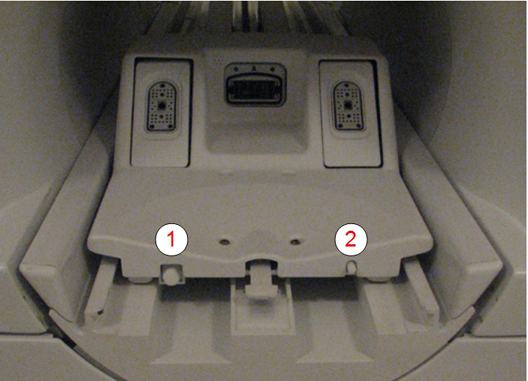
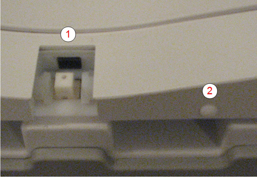
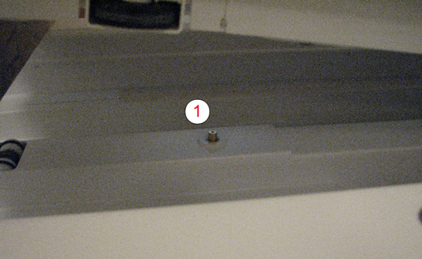
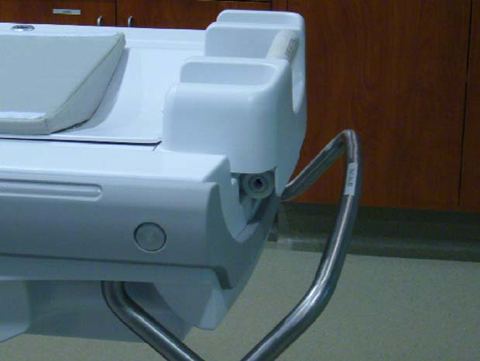
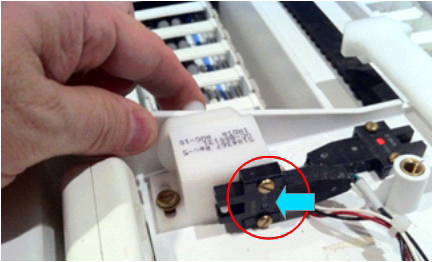
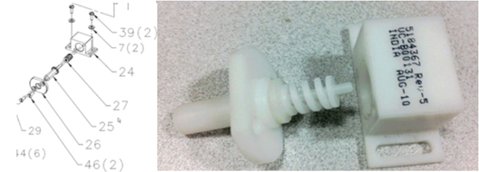

- 00000018WIA3074BE20GYZ
- id_131061652.2
- Jul 5, 2019 11:18:59 PM
Patient Handling Troubleshooting
Introduction
This document describes various connections on the table, cradle, LPCA, and dock (Connection points on table, cradle, LPCA, and dock). This document also provides a list of common problem conditions for patient handling subsystems, and possible solutions to those conditions. It contains the following sections:
Connection points on table, cradle, LPCA, and dock
This section shows connection points on table, cradle, LPCA, and dock that allow proper table movement.

| 1 | Standoff screw: The screw contacts and sufficiently depresses the cradle mechanical actuator so that the cradle can travel along the top of the table. The screw length on the LPCA must be properly set to enable cradle travel. |
| 2 | Connection switch: The switch makes sure that the cradle is attached to the LPCA. If the switch is not closed, the system is not able to scan. |

| 1 | Cradle guide rail latch: The latch keeps the cradle from moving when the table is not docked. The latch recedes into the table when the table is docked to the magnet. |
| 2 | Cradle release mechanical actuator: This actuator allows cradle movement into the magnet when the actuator is sufficiently depressed by the LPCA plunger. |

| 1 | Cradle release: Releases the secondary cradle latch when table is docked. This rod is tied to the cradle release lever on the table. See Figure 5. |
| 2 | Unused. |
| 3 | Dock motor rotary interface: This engages with the rotary hydraulic pump inside the table. Rotation, which results in table elevation, is activated by pressing the Table UP pedal located on either side of the dock. |
| 4 | Table dock switch: A fully elevating docked patient table actuates the internal dock switch and allows for LPCA movement. |
| 5 | Table identifier: For GEM systems, this is a two position switch that identifies if table is flat (GEM) or curved (non-GEM). For non-GEM systems, it is a one position switch. This is tied to item 1 in Figure 4. |
| 6 | Table down: This lowers the table when the Table DOWN foot pedal is pressed at the dock. |

| 1 | Cradle release button: When depressed due to table docking, the switch retracts the cradle release pin on the table. See Figure 5. |
| 2 | Unused. |
| 3 | Table vertical drive: Engages with the dock to raise the table when the foot switch on the dock is pressed. |
| 4 | Table dock switch plunger. |
| 5 | Table identifier: For flat (GEM) tables, there is a hole in the table which does not allow the switch on the dock to fully retract. For curved (non-GEM) tables, there is no hole, so the switch on the dock fully retracts. This is tied to item 4 on the dock Figure 3. |
| 6 | Table down: Lowers table when depressed. Also interfaces with the foot switch on the dock. |

| 1 | Cradle release pin |

| 1 | Table emergency release handle: Red handle used to release the table from the system if there are issues with the table interlocks. This handle overrides all safety interlocks. If there is a patient on the table, make sure that the patient is in a safe position before undocking the table. |
Cradle troubleshooting
Table locking
Table top does not lock in back position
There are two scenarios:
-
The table will not lock all the way.
-
The table is locked into position and will not lower or undock, forcing the technician to use the emergency release to undock.

Cause:
-
Worn edge on the locking mechanism as shown below.
-
Steering the table across the suite using the emergency release handle, instead of the stainless steering bar, can result in damage to the cradle latching system.

Solution:
Replace the worn components, and instruct users not to use the emergency handle to move the table. See Replacing the cradle guide rail.
Handle too low for technician to use
Cause:
Technicians are using the emergency release to push the table, especially when the table is in the lower position. This causes the rail guides to become misaligned. As a result, the table will not lock in position.

Solution:
Instruct the operator to use the steering handle as shown below.

Cradle moves back farther than designed

Cause:
Guide strips are misaligned or not pushed down far enough.

Solution:
Replace the defective guide rails as required. See Replacing the cradle guide rail.
Table troubleshooting
Cannot release caster lock
The wheel is locked in the forward position and will not release.
Cause:
One or both hooks are bent. See both illustrations below.


Solution:
If a hook is bent, replace it. See Replacing patient table braking system components.
Table dock hook not retracting upward when table undocked
Cause:
The table will not undock, so the emergency release needs to be used. The result is maladjustment of the internal mechanism. Another cause of dock hook problems can be a bad damper.

Solution:
-
Remove the front cowling on the patient table to expose the 32-channel connector in the table.
-
Make sure that cables or tie wraps are not obstructing travel of the connector sled to the rear. When the table is undocked, the sled must travel to the full rear position. Redress any obstructing cables.
-
Make sure that the zipper from the bellows or the cables is not getting caught behind the plastic slide or on the links or covers.
-
Examine the cradle release adjustment mechanism in the lower table frame, and make sure the adjustment line exits parallel to the block stem. (Too much tension can cause binding of the hook.)
-
Examine the adjustment line and make sure it is not too tight. It should exit the block adjustment stem as shown below. If the line is exiting the block adjustment stem at a sharper angle, the dock hook may not retract properly. Readjust the stem and nut so that the line of travel looks similar to the illustration below. See Cradle Release Block Adjustment.
Figure 16. Cradle release adjustment mechanism 
Table vertical movement
Table travels down completely with one push

Cause:

Solution:
Move the hydraulic line out of the way of the control rod. (This should have been corrected with installation of FMI 60769.)
Up and down mechanisms bind when table is docked
The table continues to go down after the pedal is released, or you are not able to move the table up when it is docked, or the table goes up slowly when the pedal is used.
-
The up and down mechanisms work when the table is undocked, but bind after the table is docked.
-
Patient table elevates slowly from the dock motor or will not elevate from the dock motor, but can be manually elevated using the patient table pedal.
Cause:
-
Problem with the motor assembly
-
Misalignment of the table.
Solution:
When viewing the dock motor from the front of the dock, make sure that the motor rotates in a clockwise direction. If it does not, swap the motor leads inside the dock to reverse the rotation, and submit a complaint for this issue.
Misalignment can result in poor fluid pressurization by the table pump and eventual discoloration of the fluid. Darkened fluid does not usually impair performance.
LPCA and longitudinal drive troubleshooting
LPCA does not sense lower table or move to start position

Cause:
-
Home switch in the front not operating correctly.
-
Dock hook tension not set correctly.
-
Cradle latch not disengaging correctly.
-
Table not properly aligned.
-
Home flag error.

Solution:
-
Make sure that the dock hook tension is properly set. Too loose a setting could contribute to the problem. If no other motion issue exists, make sure that the table up limit is coming out far enough.
Note:When the tables goes up and down, an audible click should be heard when the switch in the dock is actuated. If the up limit cable is not tensioned properly, it may not be lifting the bell crank up high enough.
-
Examine the cable for proper operation.
-
Examine the table alignment to the dock.
-
Reseat both ends of all cables connecting to the Table Interface (TIF) module located under the longitudinal drive assembly at the end of the rear pedestal.
LPCA LEDs not working
Cause:
The polarity of the LED is incorrect.
Solution:
Open the LPCA and examine the polarity of the LED. Reposition the LED in its receptacle if the polarity is incorrect.
LPCA optical switch functional check
Two optical switches are utilized inside the LPCA. The function of these switches can be made sure of from the status of the indicator LEDs on each switch, and from the status information reported through output provided by the SRI Real-Time Diagnostic. This section describes the process for making sure of switch functionality using switch LED status.
The system reports an error (2268941) saying the SRI has detected that the cradle is attached while the table is undocked and/or lowered.
Cause(s):
-
The cradle latch switch may be malfunctioning.
-
The table is malfunctioning when the table is lowered without the cradle being at home.
Solution(s):
Make sure that the cradle latch switch is functional on the LPCA.
-
Move the LPCA to the rear side of the magnet, and detach it from the cradle.
-
Remove the LPCA cover.
-
If the cradle was already disconnected from the LPCA, the cradle latch switch LED and home switch LED should be illuminated.
Figure 21. Cradle latch switch LED and home switch LED – ON 
1 Cradle latch switch LED 2 Home switch LED -
Change the LED status by pushing the mechanical actuators to block the optical switch light beams.
Figure 22. Cradle latch switch LED – OFF 
-
Faulty optical switches are replaced as entire single harness assembly. The cradle latch mechanism can be replaced as follows:
Note:Before removing the cradle latch mechanism, mark its placement for reinstallation.
-
Disassemble the cradle switch assembly:
-
Remove two screws marked 39.
-
Take the assembly out from the LPCA.
-
Remove two screws marked 46.
-
Carefully remove the plate marked 26.
-
-
Replace the spring, reassemble the components, and replace the switch back into the LPCA. Align and position the switch to match markings. Secure the switch with screws.
-
Do step 1 testing and make sure that the LPCA response is correct.
Figure 23. Cradle latch switch assembly and compression spring 
Item Quantity Part number Compression Spring, 18 mm Length 1 5168456
-
-
Examine the operation of the cradle latch switch.
-
If the cradle latch switch is functional, reseat the cables connecting the LPCA and TIF, and TIF and SRI. Refer to the system block diagrams to see affected connections.
-
Replace the LPCA cover.
In-Room Display (IRD) indicates No Home
This problem occurs even though the cradle is approximately 12 inches from the end of travel. To reset it, the table must be driven to the Home position.
Cause:
When driving the table into the bore:
-
The position display changes from about 2380 to No Home.
or
-
IRD indicates No Home.
Cause:
The Scan Room size selection in Guided Install was set too short. (Does not apply to MR450w.)
Solution:
-
Make sure that the plastic end-of-travel (EOT) ramp is attached to the proper location on the bridge. (Refer to the applicable System Installation manual for this procedure.)
Note:The ramp is affixed at the end of the bridge for a long room configuration, and three-quarters from the end of the bridge for a short room configuration.
-
From the Global Operator Cabinet (GOC), select Guided Install > Hardware, and set the Scan Range (micrometer) selection to the appropriate setting.
Cause:
The gap distance between bridge and patient table is too large.
Solution:
Make sure that the gap distance between the bridge and patient table is 19.0 mm ± 6.4 mm (0.75 inch ± 0.25 inch). Adjust according to the instructions in the installation manual.
Clutch slips
The system reports an error that indicates the clutch slip was greater than expected, or the carriage sometimes slips and will not drive all the way to the Home position.
Cause:
-
Obstacles in the longitudinal direction.
-
Misaligned belt or clutch.
Solution:
The clutch is not adjustable in the field.
-
Make sure that the system is aligned correctly.
-
Make sure the belt is tensioned properly. (See Bridge and Longitudinal Drive Belt Replacement.)
-
Examine the drive pulley on the front of the bridge and make sure it rotates freely.
-
Sometimes the carriage stops within 6.4 mm (0.25 inches) of end-of-travel, which is the Home position.
Note:If the Home button is used to drive the cradle home instead of the Out Fast button, this issue is experienced more often. When the Home button is pressed, the system slows carriage travel during its last 20 cm, so there is less inertia to help move the carriage through the last 0.25 inches of travel.
-
Drive belt tension can affect longitudinal drive force from 5 to 7 lbs. Make sure the belt is tensioned properly to help correct drive problems. If the carriage drive force is measured using a field force gauge, the force measurement should be observed midway between the two upper and lower scribe lines.
-
-
Make sure that the LPCA does not bind over the distance of travel.
Carriage hook does not detach from the cradle when the table is undocked
Cause:
-
Table height is maladjusted.
-
Hook size is too large or cradle receptor is incorrectly sized.
-
Front latch lock is not adjusted correctly.
-
Screw in front of LPCA is maladjusted.
Solution:
-
Examine the patient table alignment, leveling, and adjustment of the front carriage plunger and the egress switch position. See Adjusting the table top height.
-
Make sure that the hook fits easily into the receptor. If not, check for a burr and replace the receptor if necessary.
-
Screw in the actuator on the front of the LPCA one clockwise revolution. Make sure that the adjuster still pushes the button on the front of the cradle enough to release the cradle side latch.
Note:The adjuster should not push the button to the point that it is pressing against the front of the cradle. This adjustment takes the uneven force off the cradle and the LPCA, and centers the pressure on the cradle latch.

Cradle position lost when Advanced to Scan
After landmarking and pressing Advance to Scan, the cradle position is lost on the enclosure display. Error log shows Error 2268822.
-
Cradle did not start moving when requested.
-
Home switch may not be functioning.
-
Last stop position: -2445843 um
-
Current position: -2445843 um->
Cause:
The brass home plunger is stuck in the up position.
Solution:
-
Examine the brass home plunger located in front of the LPCA to make sure it is free of residue and able to move freely through the plastic hole in the LPCA. If residue is present, remove the plunger, clean it with rubbing alcohol, and polish it.
-
Examine the plastic hole in the LPCA for debris. If necessary, clean it using a towel dampened with water, and dry thoroughly.
Dock troubleshooting
Rotary pump fails to drive table up
Grinding of the rotary interface can result in the accumulation of debris in the front of the dock. You may also observe darkened patient table hydraulic fluid.
Cause:
-
The alignment of the table height via the casters is not correct; bosses may be misaligned. (The illustration below shows bosses properly aligned.)
Figure 25. Bosses aligned 
-
Failure in the dock motor circuit requires fault isolation.
Solution:
Table needs to be aligned to the dock.
-
Adjust the casters until the bosses are aligned.
-
Examine the dock hook for proper tension. . Also, refer to the Patient Handling Alignment Service Note, DOC0758504.
Fault in the dock motor circuit needs to be identified.
-
Use the In-Fast and Out-Fast buttons on the front enclosure to make sure that the proper cradle motion is supplied by the longitudinal drive motor (because the same PHPS power supply is shared by dock motor).
-
If cradle travel is normal, then the PHPS power supply common to both dock motor and long drive assembly motor is working properly. Look for an open circuit in the cabling to the dock motor, and make sure that the dock motor wire polarity is not reversed. Otherwise, the dock motor has failed and requires replacement. See Dock Component Replacement.
-
If cradle travel is abnormal, use a digital multimeter to make sure that voltage matches what is annotated above test points for patient handling hardware (labeled TBL) on the front of the PHPS. (These test points should always show proper voltages regardless of patient handling activity.)
Unable to align dock
Cause:
-
Bridge not centered.
-
Dock floor bolt not properly installed.
-
Front bridge lower support bracket not properly aligned.
Solution:
Examine table alignment per the installation manual and realign accordingly.
Magnet keypad and In-Room Display (IRD) troubleshooting
The In-Room Display (IRD) is dark or the trackball and buttons are not responding.
Cause:
-
IRD electronics are hung.
-
Cables are not detected or misconfigured.
-
Power supply failure occurred.
-
System requires a reset.
Solution:
Always start applications using sdc from the logon window. (Using any other logon may result in the IRD software not loading.)
It is possible that the customer changed the default password. If you cannot log on, contact the customer for the correct password.
-
If the IRD is not functioning after the initial software load, make sure the IRD software is installed from Guided Install.
-
From the Common Service Desktop, proceed to Diagnostics and run In Room Display Diagnostics.
Figure 26. In-Room Display diagnostics 
-
Find out the state of the software (installed or uninstalled).
-
Make sure both trackball assemblies are detected. IRD video will not function if trackball assemblies are not detected.
-
Examine the cabling to the trackball assemblies. If they are still not detected, select Reset IRD and make sure the trackball assemblies are detected and operational.
-
If the problem persists, attempt to restart the host PC.
-
-
-
If the IRD is still dark, use a flashlight to examine the display, and make sure that the IRD backlight has not failed.
-
Examine the Link Status and USB Status LEDs, located on the IRD module inside the GOC. Green LEDs mean the IRD is communicating, and the trackball assemblies are detected.
-
If the USB Status LED is not green, the USB signal is incorrect on the fiber optic cable. Examine the USB connections from the trackball assemblies to the IRD. From the GOC console, select Diagnostics > Hardware > Magnet Room > Reset IRD Console.
-
If the Link Status LED is red, trackball assemblies are not detected or the IRD is not communicating.
-
Make sure all of the cabling is properly connected between the in-room monitor (IRM) module and the IRD.
-
Make sure that the TX and RX fiber optic cables from the IRM are not swapped.
Figure 27. IRD connections 
-
-
PAC troubleshooting
The Physiological Acquisition Controller (PAC) is not communicating.
There are two versions of PAC units available: PAC-2B (pre Q2 of 2011) and PAC-5 (post Q2 of 2011). The PAC-5 unit has one-wire capability, but the PAC-2B unit does not.
Cause:
This message indicates a communication failure or a failure with one or more of these devices: PAC, Controller Area Network Fiber Optic board (CFB), SRF/TRF Interface (STIF) board, or Signal Processing Unit (SPU).
| Notice | |
|---|---|
Solution:
-
(For PAC-5 only) Review the LEDs on the PAC unit according to the table below:
LED Reference designation LED normal state LED fault condition Purpose Heart Beat DS9 Blinking Not illuminated Examines health and power of PAC-5 Application DS4 Illuminated Not illuminated Examines whether the application firmware is working -
Examine the fiber optic connections at the PAC.
-
Do a check of power to the PAC.
-
Run these diagnostics:
-
PAC Diagnostics Test
-
PAC Manual Tests
-
CFB Functional Diagnostics
-
FB Board Level Diagnostics
-
(For PAC-5 only) One-Wire Diagnostics
Note:The PAC communicates to the CFB across the fiber optic cable, then the CFB repeats the communications across the fiber optic cable to the STIF inside the CAM chassis or MGD. Although the PAC and STIF are not CAN devices, the CFB still facilitates their communication. The fiber optic cable connections between the CFB and PAC and from the CFB to the STIF must be attached and functioning for the PAC to communicate cardiac, respiratory, and finger probe gating information to the system.
-
Patient handling power supply (PHPS) troubleshooting
System reports error 2274509. The CFB detected that the magnet power from the PHPS is low.
Cause:
There is a known issue with how the CFB is monitoring this power. A poor cable connection to the PHPS or a failed PHPS may exist.
Solution:
Unless this message is accompanied by other error messages (at the same time) that refer to failures of the SRI, PAC, one-wire, IRD, or CFB, disregard this error as a nuisance error.
Intercom troubleshooting
No audio is coming from the patient intercom.
Cause:
Cable or component failure.
Solution:
-
Examine connections to the GOC Audio Assembly (GOCAA) module inside the GOC. Refer to the applicable system block diagrams.
-
Disconnect J34 (speaker) at SRI-4 and see if audio at the console starts working.
-
Disconnect J31 (rear microphone) at SRI-4 and see if audio at the console starts working.
-
Disconnect J32 (front microphone) at SRI-4 and see if audio at the console is working.
Note:If disconnecting one of the above restores operation of the remaining items, then inspect the disconnected item for a malfunction.
-
Check connections at: GOCAA J7, SPW J118, magnet I/O panel J1, and SRI-4 J33.
Bridge troubleshooting
Table will not align with the bridge.
Cause:
The magnet or front bracket was not installed correctly.
Solution:
Examine the position of the brackets mounted to the front of magnet. These brackets should be properly centered to permit correct alignment. Refer to the system installation manual for the procedure.